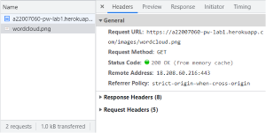
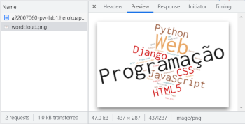
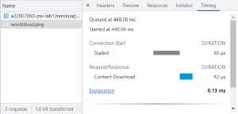

A Internet e a Web
Programação Web
Apartir da imagem abaixo ↓

Através do da opção Inspect é possível obter informação como:
- Quanto tempo demorou a página Web a ser aberta.
- As quantidades de informação tranferidas na abertura da página Web.
- Temos também acesso ao código que foi desenvolvido, que deu origem à página Web.
Podemos concluir que foram descarregados 2 ficheiros (um do tipo document e outro do tipo png)
- O ficheiro do tipo document apresenta as seguintes características:
- O ficheiro do tipo png apresenta as seguintes características:
- Header:

- Preview:

- Timing:
